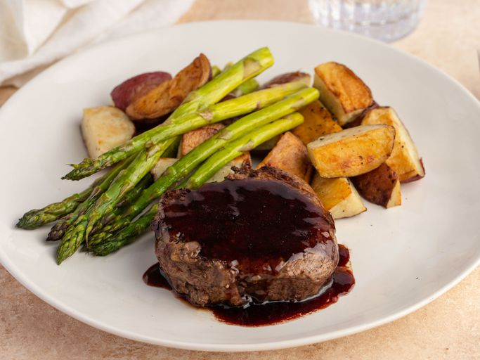

Back to Recipes
Filet Mignon with Balsamic Glaze

Description
Filet mignon is a tender and flavorful cut of beef that is often considered a delicacy. This recipe features a balsamic glaze that adds a sweet and tangy flavor to the meat, making it a perfect dish for special occasions.
Ingredients
- Filet Mignon: Choose high-quality filet mignon steaks for the best flavor and tenderness.
- Balsamic Vinegar: This adds a rich, tangy flavor to the glaze.
- Honey: A touch of honey balances the acidity of the balsamic vinegar.
- Garlic: Fresh garlic adds depth of flavor to the glaze.
- Olive Oil: Used for cooking the steaks and enhancing the flavor.
- Salt and Pepper: Essential seasonings for enhancing the taste of the meat.
Instructions
- Prepare the balsamic glaze by combining balsamic vinegar, honey, garlic, and olive oil in a saucepan. Simmer until thickened.
- Season the filet mignon steaks with salt and pepper.
- Heat olive oil in a skillet over medium-high heat. Sear the steaks for 4-5 minutes on each side for medium-rare.
- Drizzle the balsamic glaze over the cooked steaks and serve immediately.